U Tế Bào Mầm Trung Thất
I. Đại cương
– U tế bào mầm trung thất (mediastinal germ cell tumor) là nhóm u phát sinh từ tế bào mầm lạc chỗ, gồm các thể lành tính và ác tính:
+ Sự di trú bị gián đoạn của tế bào mầm nguyên thủy dọc đường giữa trong thời kỳ phôi thai là một giả thuyết giải thích sự hình thành u tế bào mầm ngoài tuyến sinh dục; cơ chế bệnh sinh chưa được xác định hoàn toàn.
+ Khả năng biệt hóa đa hướng của tế bào mầm giải thích phổ mô học từ u quái trưởng thành đến các thể ác tính.
+ Chỉ chẩn đoán u nguyên phát trung thất sau khi đã loại trừ u nguyên phát tuyến sinh dục hoặc tổn thương di căn đến trung thất.
– Trung thất là vị trí ngoài tuyến sinh dục thường gặp nhất của u tế bào mầm ở người lớn; trong nhóm u tế bào mầm trung thất, u quái là nhóm mô học thường gặp nhất.
– U tế bào mầm ngoài tuyến sinh dục hiếm gặp. Trong các loạt bệnh, nhóm này chiếm khoảng 15–20% u trung thất trước ở người lớn và 6–25% u trung thất ở trẻ em.
– Tuổi và giới có giá trị định hướng:
+ Ở người lớn, bệnh thường gặp trong độ tuổi 20–40, với đỉnh mắc bệnh khoảng 25–35 tuổi.
+ Ở trẻ em, tuổi mắc bệnh có hai đỉnh: nhũ nhi và những năm đầu đời, sau đó là giai đoạn thiếu niên.
+ U quái trưởng thành có thể gặp ở cả hai giới; u tế bào mầm ác tính trung thất gặp chủ yếu ở nam giới trẻ.
– Vị trí: U thường nằm ở trung thất trước, gần tuyến ức. Một số loạt bệnh ghi nhận khoảng 80% ở trung thất trước, 13–15% lan nhiều khoang và 2–8% ở trung thất sau.
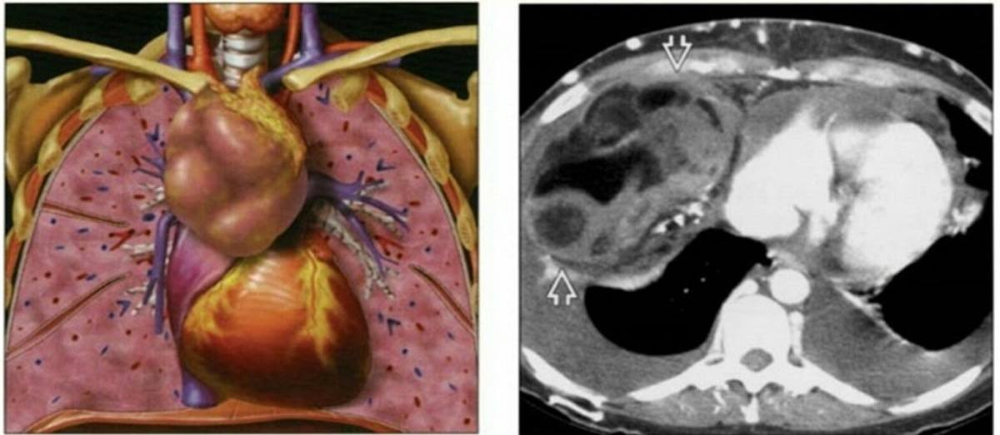
© Chẩn Đoán Hình Ảnh Xray.vn
* Phân loại
– Theo phân loại WHO 2021, u tế bào mầm trung thất gồm u tinh bào, u không phải tinh bào và u tế bào mầm kèm bệnh lý huyết học ác tính.
– U quái trưởng thành thường lành tính; u tinh bào và các thành phần ác tính không phải tinh bào là ác tính. U quái chưa trưởng thành và u quái có thành phần ác tính kiểu soma cần được phân loại riêng, không xếp chung với u quái trưởng thành.
– U quái trưởng thành (mature teratoma) là thể mô học thường gặp nhất, chiếm xấp xỉ 60% u tế bào mầm trung thất trong một số loạt bệnh:
+ Mô bệnh học gồm các mô trưởng thành, biệt hóa tốt, có thể có nguồn gốc từ các lá mầm như xương, sụn, răng, cơ, mô liên kết, mô thần kinh, tuyến ức, phổi, gan và tụy.
+ Cần lấy mẫu mô bệnh học đầy đủ để không bỏ sót thành phần chưa trưởng thành hoặc ác tính.
– Nang dạng bì (dermoid cyst) là dạng nang của u quái trưởng thành, ưu thế mô ngoại bì:
+ Thành nang thường được lót bởi biểu mô lát tầng, kèm phần phụ da như nang lông và tuyến bã; thành phần trung bì và nội bì ít hơn.
+ Cạm bẫy: Chỉ dùng thuật ngữ nang dạng bì cho dạng nang ưu thế ngoại bì, không đồng nhất thuật ngữ này với toàn bộ phổ u quái trưởng thành.
– U tinh bào (seminoma) chiếm khoảng 30–40% u tế bào mầm trung thất và khoảng 1–4% tổng số u trung thất; thường gặp ở trung thất trước của nam giới trẻ:
+ Khối thường lớn; có thể xâm lấn cấu trúc lân cận khi tiến triển. Di căn thường gặp ở hạch trung thất, phổi và xương.
+ Cần định lượng alpha-fetoprotein (AFP), beta-hCG và lactate dehydrogenase (LDH) trước sinh thiết. AFP thường bình thường trong u tinh bào thuần túy; AFP tăng gợi ý thành phần không phải tinh bào, beta-hCG có thể tăng ở một số trường hợp, còn LDH không đặc hiệu.
– U không phải tinh bào (non-seminomatous germ cell tumor) gồm u quái trưởng thành, u quái chưa trưởng thành, u quái có thành phần ác tính kiểu soma, u túi noãn hoàng (yolk sac tumor), ung thư biểu mô phôi (embryonal carcinoma), ung thư biểu mô màng đệm (choriocarcinoma) và u tế bào mầm hỗn hợp (mixed germ cell tumor):
+ Nhóm này không đồng nhất về mô học và hành vi sinh học; các thành phần ác tính thường có thể hoại tử, chảy máu hoặc xâm lấn, nhưng những đặc điểm này không hiện diện ở mọi trường hợp. Dấu ấn sinh học có thể tăng tùy thành phần mô học.
+ U hỗn hợp được báo cáo chiếm khoảng 40% trong một số loạt u không phải tinh bào; tỷ lệ thay đổi theo loạt bệnh. Lấy mẫu rộng và đối chiếu dấu ấn sinh học giúp nhận diện các thành phần phối hợp.
II. Giải phẫu
1. Phân chia trung thất
– Trung thất là khoang giải phẫu nằm giữa hai lá phổi, được giới hạn phía trước bởi mặt sau xương ức, phía sau bởi mặt trước cột sống và đầu sau xương sườn, hai bên là màng phổi trung thất, giới hạn trên là lỗ cổ ngực của lồng ngực, giới hạn dưới là phần giữa cơ hoành.
* Phân chia theo phẫu thuật (Thomas. W. Shields)
– Trung thất trước: giới hạn phía trước bởi xương ức và phía sau bởi các mạch máu lớn và màng ngoài tim.
– Trung thất giữa: giới hạn giữa trung thất trước và sau.
– Trung thất sau: được giới hạn phía trước bởi thành sau khí phế quản và mặt sau của màng ngoài tim, giới hạn phía sau bởi thân các đốt sống ngực.
– Ngoài tính theo mặt phẳng trên-dưới, trung thất được chia thành 3 tầng trên, giữa, dưới bởi 2 mặt phẳng ngang: mặt tiếp giáp với quai động mạch chủ và mặt đi qua chỗ phân đôi của khí quản.
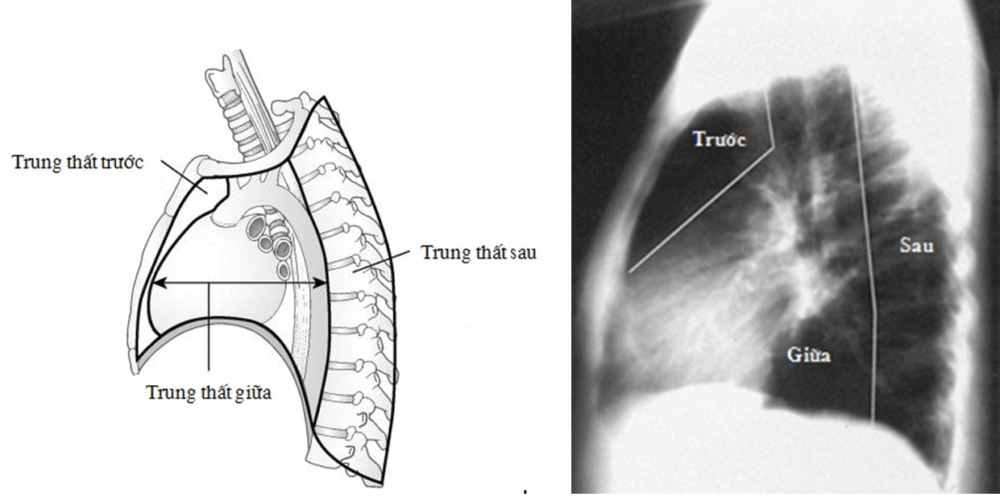
* Phân chia theo giải phẫu
– Trung thất trên: thuộc phần trên mặt phẳng đi ngang qua khe gian đốt sống ngực T4-T5 ở phía sau và góc giữa cán – thân xương ức ở phía trước.
– Trung thất trước: khoang nằm dưới mặt phẳng kể trên, giữa phía trước màng ngoài tim và mặt sau xương ức.
– Trung thất giữa: khoang chứa màng ngoài tim và tim.
– Trung thất sau: khoang nằm dưới mặt phẳng kể trên, sau màng ngoài tim và trước thân các đốt sống ngực.
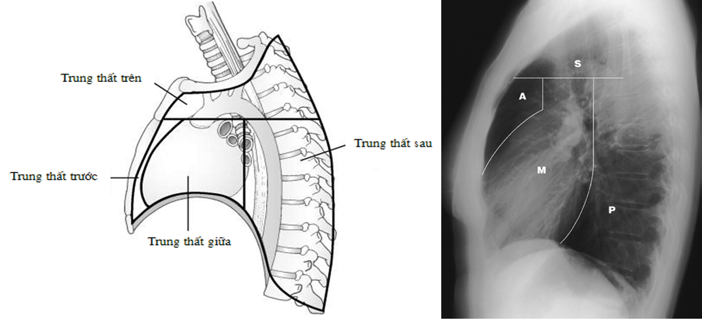


* Phân chia ITMIG (International Thymic Malignancy Interest Group)


– Khoang trước mạch máu:
+ Giới hạn phía trước bởi xương ức và phía sau bởi các mạch máu lớn và màng ngoài tim.
+ Thành phần: tuyến ức, tổ chức mỡ, hạch bạch huyết, tĩnh mạch cánh tay đầu.
+ Bệnh lý thường gặp: bệnh lý tuyến ức, u tế bào mầm, lymphoma, di căn hạch, bướu giáp thòng.
– Khoang tạng:
+ Giới hạn phía trước là khoang trước mạch máu, giới hạn phía sau bởi đường thẳng về phía sau cột sống, cách bờ trước cột sống 1cm.
+ Thành phần: tim, tĩnh mạch chủ trên, động mạch chủ, động mạch phổi, ống ngực, khí phế quản, thực quản, hạch bạch huyết.
+ Bệnh lý thường gặp: bệnh lý tim và mạch máu lớn, bệnh lý khí quản, bệnh lý thực quản, nang đôi (nang màng tim, nang phế quản), bệnh lý hạch.
– Khoang cạnh cột sống:
+ Giới hạn phía trước bởi khoang tạng.
+ Thành phần: cột sống ngực, mô mềm cạnh cột sống.
+ Bệnh lý thường gặp: khối u nguồn gốc thần kinh, nhiễm trùng cột sống, chấn thương cột sống, tạo máu ngoài tủy.


2. Khối u trung thất

3. Đặc điểm lâm sàng
– Triệu chứng phụ thuộc kích thước, vị trí, tốc độ phát triển và mức độ xâm lấn của khối u. U lành tính vẫn có thể gây triệu chứng do chèn ép, trong khi một số u ác tính chưa biểu hiện triệu chứng. Biểu hiện thường gặp liên quan đến chèn ép tĩnh mạch chủ trên, đường hô hấp, thần kinh hoặc các cơ quan trung thất.
* Hội chứng chèn ép tĩnh mạch chủ trên
– Hội chứng chèn ép tĩnh mạch chủ trên (superior vena cava syndrome) có thể gây phù mi mắt, mặt, cổ và chi trên; phù thường rõ hơn vào buổi sáng hoặc khi cúi người, có thể kèm khó thở, đau đầu, chóng mặt và tuần hoàn bàng hệ tĩnh mạch ở cổ, thành ngực.
– Nguyên nhân gồm chèn ép hoặc xâm lấn bởi khối u ác tính như ung thư phổi, lymphoma, u tuyến ức và u tế bào mầm; huyết khối tĩnh mạch, đặc biệt liên quan đến catheter tĩnh mạch trung tâm, cũng là nguyên nhân quan trọng.
– Khi không thấy khối trung thất, cần nghĩ đến huyết khối tĩnh mạch chủ trên hoặc viêm xơ trung thất; lao là một nguyên nhân có thể gặp tùy bối cảnh.
* Triệu chứng chèn ép đường hô hấp
– Chèn ép khí-phế quản có thể gây khó thở, khó thở khi nằm, thở rít (stridor) hoặc khò khè. Một số liệu được trích dẫn ghi nhận khó thở khoảng 21%; thở rít tăng dần là dấu hiệu cảnh báo hẹp đường thở nặng.
– Ho thường khan, đôi khi ho ông ổng hoặc kèm khàn tiếng; một số liệu được trích dẫn ghi nhận ho khoảng 30%.
* Liệt dây thần kinh quặt ngược trái
– Liệt dây thần kinh quặt ngược trái gây khàn tiếng, khó phát âm hoặc giọng đôi; nội soi thanh quản có thể xác định giảm hoặc mất vận động dây thanh bên trái.
– Cạm bẫy: Dấu hiệu này không định khu riêng ở trung thất giữa; cần đánh giá tổn thương dọc đường đi của thần kinh, đặc biệt vùng trung thất trên trái và cạnh quai động mạch chủ.
* Liệt thần kinh hoành
– Liệt thần kinh hoành có thể làm vòm hoành cùng bên nâng cao trên X quang ngực; nghiệm pháp hít nhanh khi chiếu X quang hoặc siêu âm có thể cho thấy vận động nghịch thường của vòm hoành.
– Liệt một bên có thể không gây triệu chứng; khó thở thường rõ hơn khi liệt hai bên hoặc dự trữ hô hấp hạn chế. Nguyên nhân có thể là khối u chèn ép hoặc xâm lấn thần kinh.
* Các dấu hiệu khác của bệnh lý trung thất
– Nuốt khó có thể do khối trung thất sau chèn ép thực quản hoặc do bệnh lý thực quản nguyên phát; chụp thực quản có cản quang hoặc nội soi được cân nhắc theo bối cảnh lâm sàng.
– Đau sau xương ức là triệu chứng không đặc hiệu, có thể liên quan đến chèn ép hoặc xâm lấn cấu trúc trung thất.
– Tổn thương chuỗi giao cảm cổ-ngực có thể gây hội chứng Claude–Bernard–Horner, gồm sụp mi, co đồng tử và giảm tiết mồ hôi nửa mặt; có thể gặp trong tổn thương vùng đỉnh phổi hoặc trung thất trên.
– U trung thất sau có thể chèn ép tủy sống, gây đau, yếu liệt, rối loạn cảm giác hoặc rối loạn cơ tròn.
– Khối u lớn có thể chèn ép hoặc xâm lấn tim, màng tim, mạch máu lớn, động mạch phổi hoặc ống ngực, gây rối loạn nhịp, rối loạn huyết động hoặc tràn dưỡng chấp màng phổi.
III. Chẩn đoán x-quang
1. U trung thất trước
– Đặc điểm hình ảnh gợi ý khối trung thất trước:
+ Trên phim thẳng, khối áp sát bờ trung thất, thường tạo góc tù và có thể làm mất bờ tiếp xúc cùng đậm độ (dấu hiệu xóa bờ).
+ Trên phim nghiêng, khối thường làm xóa khoảng sáng sau xương ức; dấu hiệu này giúp định khu tổn thương ra trước.
– Khối trung thất nằm ngoài nhu mô phổi nên không có phế quản chứa khí bên trong khối. Tuy nhiên, dấu hiệu này không đủ để phân biệt nguồn gốc: không thấy phế quản chứa khí không loại trừ khối phổi, còn thấy phế quản chứa khí trong vùng mờ gợi ý tổn thương nhu mô phổi nhưng không đặc hiệu.
– Dấu hiệu che phủ rốn phổi (hilum overlay sign) xuất hiện khi các mạch máu rốn phổi vẫn nhìn thấy xuyên qua bóng mờ; dấu hiệu này gợi ý khối không xuất phát từ rốn phổi nhưng không tự xác định được khối nằm ở khoang trước hay sau.
– Khối lớn có thể đè đẩy khí quản hoặc mạch máu lớn. X-quang ngực thẳng và nghiêng giúp định khu sơ bộ và nhận biết hiệu ứng chèn ép, nhưng không đánh giá đáng tin cậy mức độ xâm lấn mạch máu.
– Cạm bẫy:
+ Khối nhu mô phổi ngoại vi thường tạo góc nhọn với trung thất, còn khối trung thất thường tạo góc tù; quy tắc này không tuyệt đối và cần đối chiếu các dấu hiệu khác.
+ Xóa góc tâm hoành chỉ gợi ý tổn thương ở vùng góc tâm hoành, không phải dấu hiệu đặc hiệu cho mọi khối trung thất trước.
+ Tràn dịch màng phổi, xẹp phổi hoặc bờ khối không rõ không đủ để kết luận xâm lấn; CT cần thiết khi cần đánh giá chính xác vị trí, cấu trúc lân cận và mức độ xâm lấn.


2. Đặc điểm u quái
– U quái trung thất thường xuất hiện ở khoang trước, có thể tiếp giáp gốc các mạch máu lớn. Nguồn gốc thường được giải thích bằng giả thuyết tế bào mầm lạc chỗ bị giữ lại trong quá trình di cư phôi; mối liên hệ với “vi môi trường tuyến ức” chưa được xác lập.
– U quái trưởng thành thường có bờ rõ, hình tròn, bầu dục hoặc thùy múi, và có thể đè đẩy cấu trúc lân cận:
+ Hình dạng và bờ rõ không đủ để khẳng định tổn thương lành tính.
+ X-quang không đánh giá được mặt phẳng mỡ quanh khối; cần CT để đánh giá quan hệ với cấu trúc lân cận và dấu hiệu xâm lấn.
– Trên X-quang, khối có thể có vôi hóa thô, đôi khi dạng răng hoặc xương. CT nhạy hơn trong phát hiện mỡ, thành phần dịch và các ổ vôi hóa.
– Mức dịch-mỡ (fat-fluid level) trong khối dạng nang là dấu hiệu rất gợi ý u quái trưởng thành:
+ Mức này hình thành khi mỡ hoặc bã nhờn nổi trên dịch trong nang do khác biệt về tỷ trọng; không phải mọi u quái đều có dấu hiệu này.
+ Vôi hóa, mỡ hoặc mức dịch-mỡ cần được diễn giải cùng hình thái và vị trí khối; không nên xem từng dấu hiệu riêng lẻ là bằng chứng tuyệt đối.
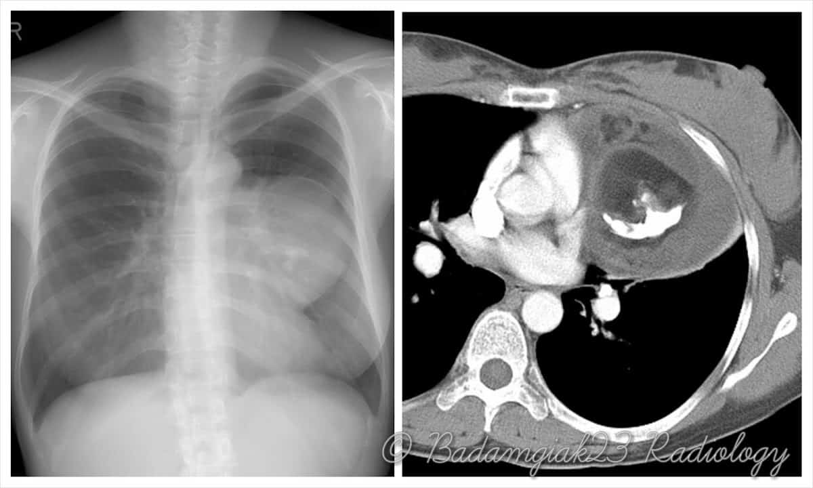
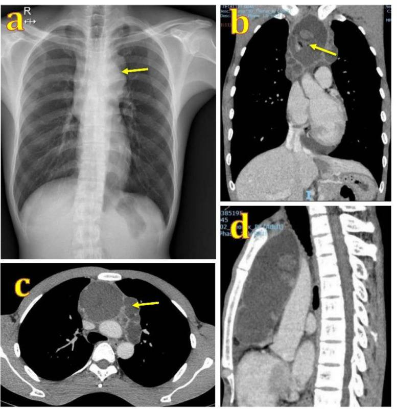
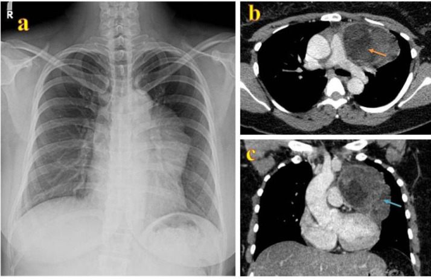
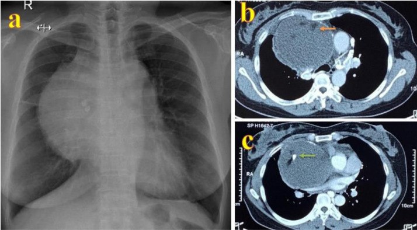
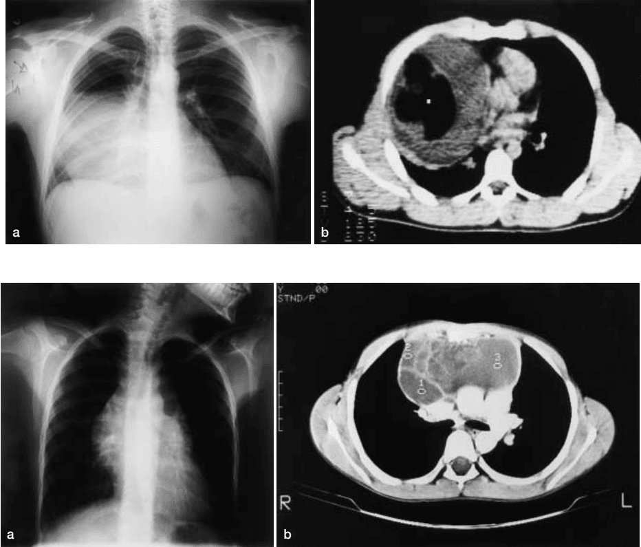
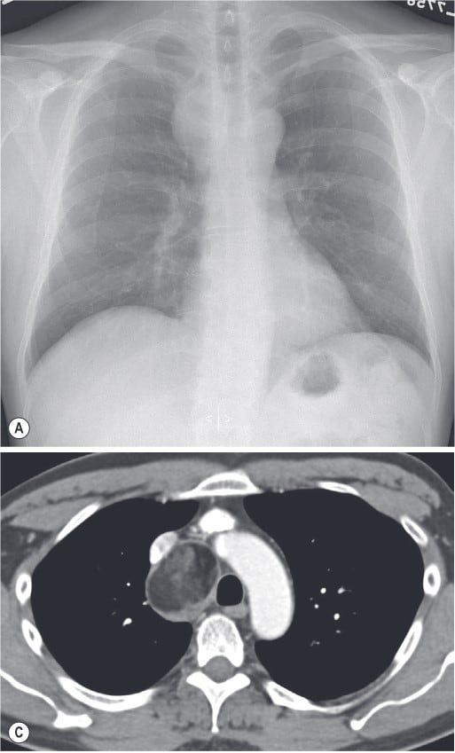
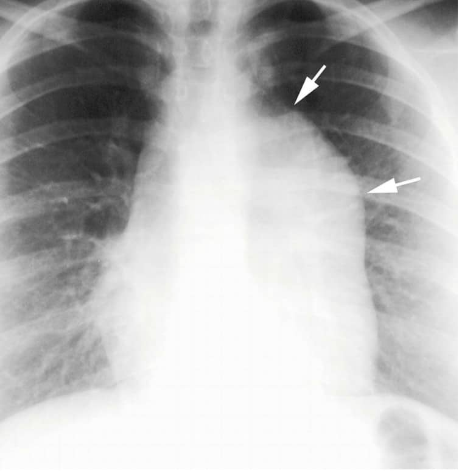
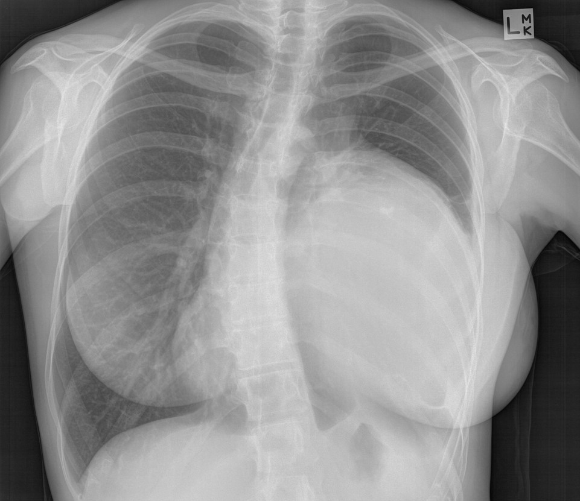
=> Case lâm sàng 1:
=> Case lâm sàng 2:
=> Case lâm sàng 3:
=> Case lâm sàng 4:
=> Case lâm sàng 5:
– U quái có thành phần ác tính có thể có bờ không đều, dạng thùy múi, lan qua nhiều khoang hoặc xâm lấn cấu trúc lân cận. Tuy nhiên, kích thước lớn, bờ thùy múi hay lan qua khoang trung thất không đủ để kết luận ác tính.
– Dấu hiệu gợi ý xâm lấn hoặc di căn:
+ Xâm lấn thành ngực, phá hủy xương hoặc lan vào mô mềm; cần CT để đánh giá, vì X-quang quy ước không xác định tin cậy mức độ xâm lấn.
+ Tràn dịch màng phổi, tràn dịch màng tim, hạch to hoặc tổn thương di căn làm tăng nghi ngờ ác tính nhưng không đặc hiệu; riêng tràn dịch không chứng minh có xâm lấn.
– Cạm bẫy: Vỡ u quái trưởng thành lành tính có thể gây viêm, tràn dịch và thâm nhiễm mô lân cận, mô phỏng xâm lấn ác tính. Cần đối chiếu biểu hiện lâm sàng và hình ảnh CT; không kết luận ác tính chỉ dựa vào mờ hoặc thâm nhiễm quanh khối.
IV. Chẩn đoán CLVT
1. U quái lành tính
– U quái trưởng thành (mature teratoma) thường là khối giới hạn rõ, có thể tròn hoặc thùy múi, và đè đẩy cấu trúc lân cận. Mặt phẳng mỡ còn bảo tồn trên CT ủng hộ không có xâm lấn đại thể, nhưng không chứng minh khối có vỏ bao hoàn chỉnh hoặc loại trừ hoàn toàn thành phần ác tính.
– Thành phần trên CT đa dãy (MDCT) thường không đồng nhất, với các vùng mô mềm, dịch, mỡ và vôi hóa:
+ Trong một loạt 66 ca, thành phần mô mềm gặp ở 100%, dịch ở 88%, mỡ ở 76% và vôi hóa ở 53%; đây là tỷ lệ của một loạt bệnh, không phải tần suất cố định.
+ Thành phần dạng nang có thể một hoặc nhiều ngăn; thành và vách có thể ngấm thuốc. Độ dày thành nang thay đổi, không nên áp dụng một khoảng số cố định.
+ Mỡ đại thể thường có tỷ trọng âm, khoảng −40 đến −120 HU. Mức dịch-mỡ gặp khoảng 11% trong loạt bệnh trên; đây là dấu hiệu rất gợi ý nhưng không thường gặp, và sự vắng mặt của nó không loại trừ u quái.
+ Vôi hóa có thể dạng thô, viền hoặc dạng răng, xương. Mô mềm có thể ngấm thuốc, nhưng chỉ riêng sự hiện diện hay ngấm thuốc của mô mềm không xác định được bản chất ác tính.
– U quái chưa trưởng thành hoặc u quái có thành phần ác tính có thể có phần mô mềm đặc, bờ không đều và ngấm thuốc không đồng nhất; các dấu hiệu này chồng lấp với u quái trưởng thành và các khối u khác, nên MDCT không đủ để xác định mô học.
– Khi u quái vỡ, CT có thể thấy thành không đều hoặc mất liên tục, các thành phần bên trong trở nên không đồng nhất, thâm nhiễm mỡ quanh khối, đông đặc phổi lân cận hoặc tràn dịch màng phổi, màng tim:
+ Viêm quanh khối sau vỡ có thể mô phỏng xâm lấn ác tính; không kết luận ác tính chỉ dựa vào bờ mờ hay thâm nhiễm mỡ đơn thuần.
+ MRI, bao gồm chuỗi Dixon, có thể hỗ trợ xác định thành phần mỡ khi CT chưa rõ; các chuỗi MRI khác có thể bổ sung đánh giá mô mềm và liên quan với cấu trúc lân cận, nhưng không tự phân biệt chắc chắn viêm với xâm lấn.


=> Case lâm sàng 1:
=> Case lâm sàng 2:
=> Case lâm sàng 3:
=> Case lâm sàng 4:
=> Case lâm sàng 5:
=> Case lâm sàng 6:
=> Case lâm sàng 7:
=> Case lâm sàng 8:
2. U tế bào mầm ác tính
– Đặc điểm CLVT thay đổi theo mô học:
+ U tinh bào thường là khối mô mềm lớn, thùy múi, tương đối đồng nhất và ngấm thuốc nhẹ; có thể đè đẩy hoặc xâm lấn cấu trúc lân cận.
+ U không phải tinh bào, nhất là u hỗn hợp, thường không đồng nhất hơn, có thể gồm mô đặc, nang hóa, hoại tử hoặc xuất huyết. Mỡ và vôi hóa có thể hiện diện khi có thành phần u quái.
– Khối có thể lớn, bờ không đều hoặc lan qua nhiều khoang trung thất; các dấu hiệu này không đặc hiệu. Mất mặt phẳng mỡ có thể gợi ý xâm lấn, nhưng cũng gặp do đè ép hoặc viêm, nên cần đánh giá cùng các dấu hiệu khác.
– Không nên áp dụng tỷ lệ mỡ khoảng 40% cho mọi u tế bào mầm ác tính: mỡ gợi ý thành phần u quái, nhưng có thể vắng mặt và không giúp loại trừ u hỗn hợp.
– Hoại tử, xuất huyết và ngấm thuốc không đồng nhất có thể gặp, đặc biệt ở u không phải tinh bào; không phải đặc điểm bắt buộc của mọi u tế bào mầm ác tính. Vôi hóa cũng có thể có nếu khối chứa thành phần u quái.
– Đánh giá xâm lấn và di căn:
+ Xâm lấn thành ngực, màng phổi, màng tim hoặc mạch máu là lan rộng tại chỗ, không phải di căn. Tràn dịch màng phổi, tràn dịch màng tim hoặc hạch to làm tăng nghi ngờ nhưng không đặc hiệu và không tự chứng minh xâm lấn.
+ Di căn có thể đến hạch vùng và các cơ quan xa như phổi, gan hoặc xương; cần đánh giá toàn diện để phân giai đoạn.
– FDG PET/CT không thay thế CLVT có tiêm cản quang để đánh giá cấu trúc, mỡ và vôi hóa. Vai trò sau hóa trị tùy mô học: có thể cân nhắc trong một số u tinh bào còn khối tồn dư lớn, nhưng không dùng thường quy để xác định bản chất khối tồn dư của u không phải tinh bào.
– Cạm bẫy: Khối tồn dư sau hóa trị có thể gồm mô xơ-hoại tử, u quái trưởng thành hoặc u còn tế bào ác tính. U quái có thể tiếp tục lớn dù dấu ấn sinh học đã bình thường hóa; vì vậy cần đối chiếu hình ảnh với diễn tiến và AFP, β-hCG, LDH. LDH không đặc hiệu, và dấu ấn bình thường không loại trừ u quái tồn dư.
=> Case lâm sàng 1:
=> Case lâm sàng 2:
=> Case lâm sàng 3:
V. Phân biệt
1. Lymphoma
* Loại Hodgkin
– U lympho Hodgkin (Hodgkin lymphoma; HL) thường gây hạch lớn ở trung thất trước và vùng cạnh khí quản; hạch có thể rời rạc hoặc hợp lưu thành khối. Bệnh thường lan liên tiếp từ nhóm hạch này sang nhóm hạch kế cận.
– Hạch chưa điều trị hiếm khi vôi hóa; vôi hóa gặp thường hơn sau điều trị.
– Có thể có tổn thương nhu mô phổi do lan trực tiếp từ khối hạch lớn hoặc do tổn thương ngoài hạch. Tràn dịch màng phổi cũng có thể gặp nhưng không đặc hiệu.
– Phân biệt với u tế bào mầm trung thất: Kiểu lan liên tiếp theo chuỗi hạch và ưu thế hạch trước-cạnh khí quản ủng hộ HL; một khối trung thất trước có thành phần mỡ hoặc vôi hóa gợi ý thành phần u quái, còn AFP hoặc β-hCG tăng hỗ trợ chẩn đoán u tế bào mầm. Hai bệnh vẫn có thể chồng lấp hình ảnh, nhất là khi u tế bào mầm là thể tinh bào thuần túy; cần mô bệnh học để xác định.


* Loại không Hodgkin
– U lympho không Hodgkin (non-Hodgkin lymphoma; NHL) có biểu hiện hình ảnh thay đổi theo phân nhóm mô học và giai đoạn:
+ Có thể gặp khối lớn hoặc nhiều nhóm hạch ở trung thất và rốn phổi; một số thể biểu hiện ở một vùng hạch, trong khi các thể khác lan không liên tục hoặc có tổn thương ngoài hạch.
+ Một số thể, như lymphoma tế bào B lớn nguyên phát trung thất hoặc lymphoma lymphoblastic tế bào T, thường tạo khối lớn ở trung thất trước. Trung thất sau và góc tâm hoành không phải vị trí điển hình chung của NHL.
– Phân biệt với u tế bào mầm trung thất: Một khối hạch lớn ở trung thất trước có thể gặp ở cả NHL và u tế bào mầm. Thành phần mỡ-vôi hóa gợi ý u quái trong nhóm u tế bào mầm; AFP hoặc β-hCG tăng cũng hỗ trợ nhóm này, nhưng dấu ấn bình thường không loại trừ u tế bào mầm. NHL có thể lan hạch không liên tục hoặc ngoài hạch; các dấu hiệu hình ảnh chồng lấp nên cần mô bệnh học để xác định.


2. U mỡ tuyến ức
– U mỡ tuyến ức (thymolipoma) là u lành hiếm gặp, chiếm khoảng 2–9% các u tuyến ức; thường xuất phát từ trung thất trước. U có thể kéo dài xuống góc tâm hoành, thường gặp ở trẻ em và người trẻ nhưng có thể xuất hiện ở nhiều lứa tuổi, không có ưu thế giới rõ.
– Nhiều trường hợp không triệu chứng và được phát hiện tình cờ. Khối lớn có thể gây ho, khó thở hoặc đau ngực do chèn ép; kích thước rất thay đổi, đôi khi đạt tới khoảng 20 cm.
– Khối thường giới hạn rõ, có bao, dạng thùy múi và chứa nhiều mỡ. Trên CT, thấy mỡ đại thể xen các dải hoặc đảo mô mềm tương ứng với mô tuyến ức và mô xơ. Khối mềm, có thể phát triển dạng thòng xuống phía cơ hoành, lan quanh tim hoặc vào góc tâm hoành; hình dạng có thể thay đổi theo tư thế.
– Phân biệt với u tế bào mầm trung thất:
+ U mỡ tuyến ức thường ưu thế mỡ, có các dải mô mềm mảnh gợi mô tuyến ức, đôi khi có hình dạng thòng và ôm theo các cấu trúc lân cận.
+ U quái trưởng thành thường là khối khu trú, không đồng nhất, có thể phối hợp các thành phần dịch/nang, mỡ, mô mềm và vôi hóa; vôi hóa dạng răng hoặc xương và mức dịch-mỡ gợi ý u quái hơn. Không phải mọi u quái đều có đủ các thành phần này.
+ U tế bào mầm ác tính thường có thành phần mô mềm đặc nổi trội hơn; hoại tử, xuất huyết, bờ không đều, xâm lấn hoặc di căn làm tăng nghi ngờ ác tính. AFP và β-hCG có thể hỗ trợ đánh giá tùy mô học; dấu ấn bình thường không loại trừ mọi u tế bào mầm.
+ Cả hai loại u đều có thể lớn và nằm ở trung thất trước; chỉ vị trí hoặc sự hiện diện của mỡ không đủ để phân biệt. Khi hình ảnh không điển hình, cần đối chiếu toàn bộ đặc điểm CT, lâm sàng và dấu ấn sinh học; xác định mô học khi có chỉ định.


=> Case lâm sàng 1:

=> Case lâm sàng 2:


3. Bệnh mỡ trung thất
– Bệnh mỡ trung thất (mediastinal lipomatosis) là tình trạng tích tụ lan tỏa mô mỡ không vỏ bao, không phải u tân sinh:
+ Thường liên quan đến béo phì, dùng glucocorticoid kéo dài hoặc hội chứng Cushing.
+ Có thể gặp ở nhiều khoang trung thất; biểu hiện thường lan tỏa, đôi khi tương đối đối xứng.
– Đặc điểm trên CT:
+ Mỡ có tỷ trọng âm, lan quanh các cấu trúc trung thất, không tạo khối khu trú có bao; thường không gây hiệu ứng choán chỗ đáng kể, nhưng mức độ chèn ép có thể tăng khi lượng mỡ nhiều.
+ Không có nốt mô mềm khu trú, vách dày bất thường hoặc vôi hóa dạng răng-xương. MRI Dixon có thể hỗ trợ xác định thành phần mỡ, nhưng không tự phân biệt bệnh mỡ trung thất với các u có chứa mỡ.
– Phân biệt với u tế bào mầm trung thất (mediastinal germ cell tumor): Bệnh mỡ trung thất là mỡ lan tỏa không vỏ bao; u quái thường là khối khu trú, không đồng nhất, có thể phối hợp dịch/nang, mỡ, mô mềm và vôi hóa. Mức dịch-mỡ hoặc vôi hóa dạng răng-xương gợi ý u quái, nhưng sự vắng mặt của chúng không loại trừ u tế bào mầm.
– Phân biệt với u mỡ tuyến ức (thymolipoma): U mỡ tuyến ức thường là khối khu trú, giới hạn rõ, có nguồn gốc vùng tuyến ức, gồm nhiều mỡ xen các dải hoặc đảo mô mềm tuyến ức và có thể phát triển dạng thòng xuống góc tâm hoành; bệnh mỡ trung thất lan tỏa quanh nhiều cấu trúc, không tạo khối riêng biệt có bao.

=> Case lâm sàng 1:


=> Case lâm sàng 2:


VI. Tiên lượng & Điều trị
– Tiên lượng:
+ U quái trưởng thành (mature teratoma) khu trú, được cắt bỏ hoàn toàn thường có tiên lượng rất tốt; nguy cơ tồn tại hoặc tái phát tăng khi cắt không hoàn toàn. U quái không trưởng thành hoặc có chuyển dạng ác tính thường tiên lượng kém hơn.
+ U tinh bào trung thất tiên phát (seminoma) thường đáp ứng tốt với điều trị, tỷ lệ sống còn toàn bộ 5 năm trong các loạt bệnh được báo cáo trên 90%. U không phải tinh bào (non-seminoma) có tiên lượng xấu hơn, thuộc nhóm nguy cơ xấu theo IGCCCG; tỷ lệ sống còn toàn bộ 5 năm khoảng 40–50% sau điều trị đa mô thức.
+ Yếu tố tiên lượng xấu gồm di căn tạng ngoài phổi, β-hCG tăng cao, dấu ấn u giảm kém sau hóa trị, còn thành phần u sống hoặc không thể cắt bỏ hoàn toàn khối tồn dư.
– Điều trị:
+ Lựa chọn điều trị dựa trên mô bệnh học, giai đoạn, dấu ấn u và phân nhóm nguy cơ IGCCCG; cần hội chẩn đa chuyên khoa tại trung tâm có kinh nghiệm. Theo EAU 2026 và SEOM-GG 2023, các nguyên tắc điều trị u tế bào mầm tinh hoàn được áp dụng cho u tế bào mầm trung thất.
+ U quái trưởng thành, không có thành phần ác tính khác: phẫu thuật cắt bỏ hoàn toàn là điều trị chính; hóa trị không có vai trò thường quy. Khối tăng kích thước dù dấu ấn u giảm hoặc bình thường cần nghĩ đến hội chứng u quái phát triển và đánh giá khả năng phẫu thuật.
+ U tinh bào ác tính: hóa trị nền cisplatin theo phân nhóm nguy cơ; nhóm nguy cơ tốt thường dùng 3 chu kỳ BEP (bleomycin, etoposide, cisplatin) hoặc 4 chu kỳ EP nếu không dùng được bleomycin; nhóm nguy cơ trung gian thường dùng 4 chu kỳ BEP hoặc VIP (etoposide, ifosfamide, cisplatin) khi bleomycin chống chỉ định.
+ U không phải tinh bào ác tính trung thất thường được xếp nhóm nguy cơ xấu, điều trị bằng 4 chu kỳ BEP; dùng VIP khi bleomycin chống chỉ định. Có thể cân nhắc điều trị tăng cường ở một số trường hợp chọn lọc tại trung tâm chuyên sâu hoặc trong nghiên cứu, nhưng không xem là chiến lược thường quy cho mọi người bệnh. Cân nhắc phẫu thuật cắt bỏ khối tồn dư còn khả năng cắt sau hóa trị vì có thể còn u quái hoặc tế bào u sống.
+ Đánh giá đáp ứng bằng dấu ấn u và CT. Với u tinh bào còn khối tồn dư >3 cm, có thể cân nhắc FDG-PET/CT sau khi kết thúc hóa trị ít nhất 2 tháng; kết quả dương tính đơn độc không đủ để quyết định điều trị tiếp. Với u không phải tinh bào, FDG-PET/CT không đáng tin cậy để loại trừ u quái tồn dư; quyết định phẫu thuật dựa trên khả năng cắt bỏ và hội chẩn chuyên khoa.
+ Tư vấn bảo tồn sinh sản trước hóa trị; theo dõi độc tính muộn trên thận, thính giác, thần kinh, phổi và tim mạch, cũng như nguy cơ ung thư thứ phát.
Tài liệu tham khảo
* Mediastinal germ cell tumors: radiologic and pathologic correlation – M L Rosado-de-Christenson, P A Templeton, and C A Moran
* Mediastinal mature teratoma: imaging features – K H Moeller, M L Rosado-de-Christenson and P A Templeton
* Mediastinal lines, stripes and interfaces on PA chest radiograph with CT correlations – N. Bystrická, H. Poláková, J. Sykora; Bratislava/SK
* What the radiologist should know about mediastinum: from anatomy to imaging – L. Mazzamurro, M. Mereu, S. Conte
* Positive and differential diagnosis in tumoral pericardial involvement focused on CT examinations – A. Flintoaca-Filip, I. G. Lupescu, D. M. Tabac, M. Ichim, R. A. Capsa; Bucharest/RO
* Anterior mediastinum: anatomy and masses – know the normal to find the pathology – B. M. Araujo, A. F. S. Simões, P. M. M. Lopes
* Lesions of the anterior mediastinum: radiologic appearance and histologic diagnostic correlation after percutaneous needle biopsy – R. D. T. Mesquita, P. Ananias, P. M. M. Lopes
* Fat-containing lesions of the chest – E. Aydın, S. Bayraktaroglu, N. Ceylan, C. Altın, R. Savas; Izmir/TR
* Mediastinal masses in children: how helpful is CT in determining their nature? – G. Lembarki, K. Chbani, S. Salam, L. OUZIDANE; Casablanca/MA
* A diagnostic approach to the anterior mediastinal masses: Beyond the 4 T’s – R. Grippo, C. A. Mallio, B. Beomonte Zobel
* Cystic Mediastinal Lesions: A Pictorial Review – S. Loutfi, M. AL HOURI, E. K. Omar, S. Al Rajhi, S. Al Ghanem; Riyadh/SA
* Imaging findings of fat containing mediastinal lesions – H. Maki, Y. Ozawa, Y. Ishihara
* Spectrum of Teratoma: From Head to Toe, radiological pathological correlation – T. Raafat, Y. Mahfouz, M. ELshafiey, A. Refaat, I. Gouda ; Cairo/EG
* Imaging findings of three cases of large mediastinal mature cystic teratoma – Vo Tan Duc
* A diagnostic approach to the mediastinal masses – Sergi Juanpere
* Grainger & Allison’s Diagnostic Radiology – Andreas Adam